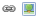
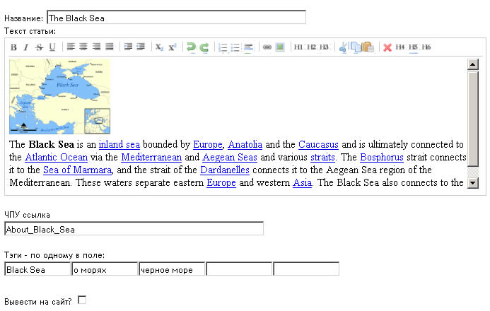

Публикация страниц и новостей
- В этом разделе создаются html страницы и новости
- Если статья длинная, введите тэг %cut% в любом месте, и он превратится в ссылку 'далее'
- Чтобы добавить видео, просто вставьте ссылку, например http://www.youtube.com/watch?v=GP5C3WrLx_s в текст. Поддерживаются все популярные видеохостинги.
- Чтобы узнать ссылку на загруженный Вами файл, перейдите в раздел Файлы или Галерею и кликните Copy Link
- Чтобы вставить ссылку на email просто вставьте email в текст, он будет превращена в спамозащищенный вид.
- В текущей версии Dakota CMS нельзя вставлять произвольный код HTML (например Googl Map) публикации. Эта функциональность в разработке.
- Чтобы вставить ссылку или внешнюю картинку, воспользуйтесь этими пунктами редактора 
Информация
Вид новой публикации в админке
- Ссылка вида Dacota.loc/articles/new/ намного приятнее Глазу и Роботу, чем Dacota.loc/index.php?page=articles&action=new , то есть это Человеко Понятная Сссылка
- Оставите пустой - будет создана из названия.
-
 Вы не можете задать ЧПУ ссылку, совпадающую с уже существующей - произойдет ошибка.
Вы не можете задать ЧПУ ссылку, совпадающую с уже существующей - произойдет ошибка.
ЧПУ ссылка
- Тэги - это автоклассификаторы ваших страниц. Например - новости, рыбалка, мультики
- Заполните минимум один, максимум - пять. Без запятых, каждый в своем окне.
- Тэги выводятся в Виджете Облако Тэгов
Тэги
- Если не выбрать это пункт - публикация будет видна только в админ-центре.
-
Не забудьте вывести публикацию на сайт после редактирования.
Вывести на сайт?
- Используйет эту опцию, если вы хотите , чтобы на главной была некая статическая информация, не из раздела новостей.
- Если не выбрано - на главной будут выводиться 3 последние публикации.
-
Доступна только с опцией «Вывести на сайт»
Это публикация для главной?
- Выберите это пункт, например, для создания страницы «О проекте» или «Контакты» и используйте ссылку на нее в шаблоне header.tpl или виджете Меню. В примере Dakota, который вы скачали, так сделана страница «О проекте».
- Если выбрано - публикация НЕ выводится в списке новостей.
Это НЕ новость?
- Если не выбрано - публикацию нельзя комментировать.
- Используйет эту опцию, например, для страниц типа НЕ новость .